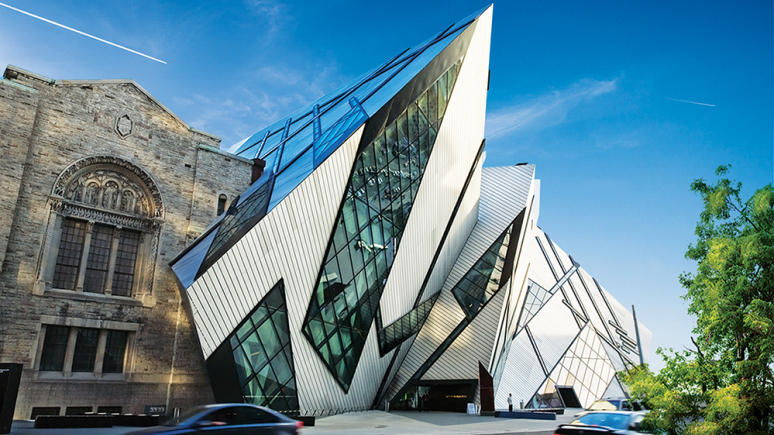

High-Tech
High-Tech arcitecture is on 30 years old and has only become possible due to computers.
With the help of computers arcitects have now been able to create much more abstract and bold buildings.
High-Tech arcitecture consits of abstract shapes such as sharp curves, or ribbion like shape, in short the shape is unconventional, a non traditional shape of architecture.
High-Tech arcitecture also consists of a principle called Deconstructivism, where the basic shapes of the building have been broken down or disassembled along with the structural support of the building being hidden from sight.
Examples of High-Tech architecture:

Jorn Utzon's Sydney Opera House

Frank Gehry's Guggenheim Museum Bilbao
Daniel Libeskind's Michael Lee Crystal
Fun Fact: Daniel Libeskind was hired by the Royal Ontario Museum to make an exhibit, Seeing as what he made was High-Tech he decided to merge it with the traditional building of the museum.
Table of Contents
Neo-ClassicalPrairie
Art-Deco
Modernism
Source Material